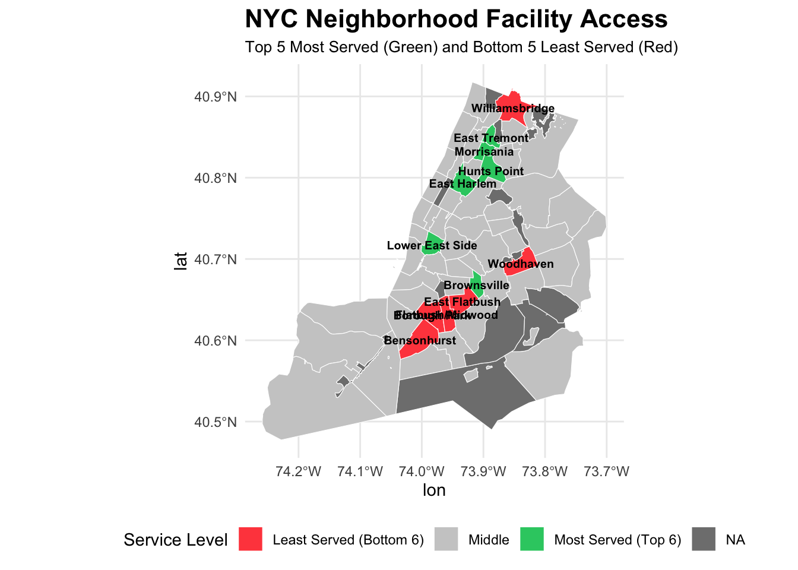

Facilities Access in NYC Neighborhoods - Final Induvidual Report
Author
Daniel Ohebshalom
Introduction
For the term project, I was assigned the following question: Are certain neighborhoods overserved/underserved in terms of recreational facilities relative to population density? Or in easier terms, which neighborhoods have a superflouous amount of parks and which ones are in dire need of more recreational spaces? This is part of our overarching question: How equitable is access to public park space across different neighborhoods in New York City?. NYC neighborhoods specifically are being analyzed here as they are amongst the most densely populated in America, and each neighborhodd varies wildly in terms of park availability per analysis. This study seeks to prove which neighborhoods in New York City are the most overserved and underserved in park availability through performing a per-capita analysis per 1,000 residents in each neighborhood, a following spatial distribution to see neighborhood geographic trends in park availability, and finally listing out the top and bottom 20% of neighborhoods in terms of park service with their Population, Number of Facilities, and resulting facilities per 1,000 residents that measure the correlation and overall park accessibility for a Neighborhood and its residents. For this measurement, park type, attributes, or quality are irrelevant, this is just measuring the quantifiable amount of parks in a given space relative to its population and giving reasoning as to why this may be the case.
Data
For this project, I used the parks properties and total population datasets that were provided by the NYC parks service and Department of City Planning, where I analyzed the connections and disparities between park access in 60 NYC neighborhoods and noted down the 6 best and 6 worst (top/bottom 20%). The Parks properties dataset is specifically noted with multipolyogon cordinates where each park was on the map through spatial notation, which is why I also used a shapefile in the final product to get the geography of NYC to map the neighborhoods and park placements and then in turn assign them to their respective Borough and Community District (BoroCD) on the map for geographic notation that could in the end track the geographic trends of park availability.
For this analysis, I utilized a variety of R functions and methods to reach my goal. Before even reading my datasets, I downloaded a shapefile directory to acquire a map of every NYC neighborhood with the goal to notice if park disparity was a more geographic issue in bordering neighborhoods or if it was scattered. To clean up and match the data so that it ran properly and gave the correct results, I went through an intensive cleaning process in RStudio that included getting rid of blank rows and matching up the neighborhoods with the shapefiles through their BoroCDs. To facilitate the process even more, I went into the Populations CSV and added every neighborhood’s respective BoroCD to match up on the given shapefile during analysis. This method, while non technical, was perhaps the easiest way to reaach my goal as I would have had to create or find a new file that had the BoroCD since it wasn’t originally on the CSV.
In terms of computing the per captia analysis, we start by loading the shapefile (neighborhoods) provided by the NYC department of city planning through the shapefile and stringer packages in RStudio, unifying the case of the labels on the shapefile in the process and inspecting the columns provided such as the area, multipolygonal geometry coordinates, and most importantly the BoroCD which is renamed to match what is on the population CSV for further analyses later. After a final spatial analysis that readies the shapefile for spatial joins using sf_join and coverts the multipolygonal data to be used, we next load the parks properties CSV (facilities) through the readr package, unifying the names to lowercase and converting the multipolygon to geometry to match up on the shapefile, which is then spatially joined to the data of the shapefile to assign each facility to their respective Neighborhood’s BoroCD as shown in the real world. Once each park is assigned, we run a count function grouped by BoroCD to show quantitatively how many parks are in each neighborhood. Now we must load in the Total Population csv (Population) that also has the respective BoroCD for each neighborhood, ensuring that each column can be ran propely through mutate and replace functions before joining the population data by BoroCD with facility counts for the first steps of computing the per capital analysis, creating a neighborhood_metrics function that is meant to give us the final results. Within said function, we identify the missing values to prevent an error using is.na in the facilities dataset and run the Analysis by Dividing the Facilites by Population and dividing the quotient by 1000 in each neighborhood, rounding to three decimal points (facilities_per_1000). Finally, to produce the rankings for the top 6 best and worst served neighborhoods, we create the best_served and worst_served functions with neighborhood_metrics, arranging the final results desc and head 6 for the best served neighborhoods and sans the desc for the worst served neighborhoods and then finally importing it into a datatable for neatness and searchability of all neighborhoods; Giving us our final results and joining the results back to the shapefile map to create our geographic analysis.
Code
# Load librarieslibrary(sf)library(dplyr)library(readr)library(stringr)library(plotly)library(DT)#===========================================# 1. Load the shapefile (NYC Community Districts)#===========================================neighborhoods <-st_read("nycdwi_25d/nycdwi.shp")
Reading layer `nycdwi' from data source
`/Users/danieloheb/STA9750-2025-FALL/nycdwi_25d/nycdwi.shp'
using driver `ESRI Shapefile'
Simple feature collection with 71 features and 3 fields
Geometry type: MULTIPOLYGON
Dimension: XY
Bounding box: xmin: 912287.1 ymin: 113279.3 xmax: 1067383 ymax: 273617.8
Projected CRS: NAD83 / New York Long Island (ftUS)
Code
names(neighborhoods) <-tolower(names(neighborhoods))# Rename borocd → BoroCD (to match your population CSV)neighborhoods <- neighborhoods %>%rename(BoroCD = borocd)# Project to WGS84 (safe for spatial joins)neighborhoods <-st_transform(neighborhoods, 4326)#===========================================# 2. Load Facilities CSV (with multipolygon WKT)#===========================================facilities <-read_csv("Parks_Properties_20251005.csv")names(facilities) <-tolower(names(facilities))# Convert WKT to geometryfacilities_sf <-st_as_sf( facilities,wkt ="multipolygon",crs =4326)# Fix invalid geometriesfacilities_sf <-st_make_valid(facilities_sf)#===========================================# 3. Spatial join → assign each facility to BoroCD#===========================================facilities_joined <-st_join( facilities_sf, neighborhoods,left =TRUE,join = st_intersects)#===========================================# 4. Facilities per BoroCD#===========================================facility_counts <- facilities_joined %>%st_drop_geometry() %>%group_by(BoroCD) %>%summarise(Facilities =n())#===========================================# 5. Load Population CSV (Now includes BoroCD)#===========================================population <-read_csv("Total Population.csv")names(population) <-str_replace_all(names(population), " ", "")# Ensure BoroCD column exists and is numericpopulation <- population %>%mutate(BoroCD =as.integer(BoroCD))#===========================================# 6. Join population with facility counts#===========================================neighborhood_metrics <- population %>%left_join(facility_counts, by ="BoroCD") %>%mutate(Facilities =ifelse(is.na(Facilities), 0, Facilities),Facilities_per_1000 =round((Facilities / Population) *1000, 3) )#===========================================# 7. Produce ranking results (Interactive Tables)#===========================================# Best-served neighborhoodsbest_served <- neighborhood_metrics %>%arrange(desc(Facilities_per_1000)) %>%head(30)# Underserved neighborhoodsworst_served <- neighborhood_metrics %>%arrange(Facilities_per_1000) %>%head(30)# ---- Top 6 Best-Served ----datatable( best_served,rownames =FALSE,options =list(pageLength =6,autoWidth =TRUE ),caption = htmltools::tags$caption(style ="caption-side: top; font-weight: bold;","Top 6 Best-Served Neighborhoods (Facilities per 1,000 Residents)" ))
#===========================================# 8. Join results back to map#===========================================neighborhood_map <- neighborhoods %>%left_join(neighborhood_metrics, by ="BoroCD")
Visualizations
To create the map shown below, we import the ggplot2 and dplyer packages and recalculate the top and bottom 6 measurements to get a proper middle tier that can be displayed (Neighborhood_Metrics). We then joined the neighborhood metrics to the shapefile geometries by BoroCD and filtered the label points for the map so that only the top and the bottom 6 neighborhoods are displayed in the final product (Label Points). Finally, we can generate our map (gg_map), deciding on the appropriate sizes, colors, and placing the respective labels to follow correct graph etiquette.
Code
#===========================================# Map Visualization#===========================================library(sf)library(dplyr)library(ggplot2)# Recalculate Service Tiers (Top 6 / Bottom 6)neighborhood_metrics <- neighborhood_metrics %>%arrange(desc(Facilities_per_1000)) %>%mutate(Rank =row_number(),Service_Tier =case_when( Rank <=6~"Most Served (Top 6)", Rank > (n() -6) ~"Least Served (Bottom 6)",TRUE~"Middle" ) )# Join metrics to geometriesneighborhood_map <- neighborhoods %>%left_join(neighborhood_metrics, by ="BoroCD")# Compute centroids for only labeled neighborhoodslabel_points <- neighborhood_map %>%filter(Service_Tier !="Middle") %>%# only top 6 & bottom 6st_centroid() %>%mutate(lon =st_coordinates(.)[, 1],lat =st_coordinates(.)[, 2] )# Plot the mapgg_map <-ggplot() +geom_sf(data = neighborhood_map,aes(fill = Service_Tier),color ="white",size =0.8 ) +scale_fill_manual(values =c("Least Served (Bottom 6)"="#ff4c4c","Middle"="grey80","Most Served (Top 6)"="#2ecc71" ) ) +geom_text(data = label_points,aes(x = lon, y = lat, label = Neighborhood),size =2.6,fontface ="bold",color ="black" ) +labs(title ="NYC Neighborhood Facility Access",subtitle ="Top 5 Most Served (Green) and Bottom 5 Least Served (Red)",fill ="Service Level" ) +theme_minimal() +theme(plot.title =element_text(size =16, face ="bold"),plot.subtitle =element_text(size =10),legend.position ="bottom" )print(gg_map)

The Scatterplot graph follows a similar approach. After loading in the prior two packages plus ggrepel to prevent egrigous label overlap, we perform the filter function again to ensure there is a middle tier, and then create the scatter plot through ggplot with correct graph etiquette, only this time instead of displaying a map we must select and adjust the axes based on the prior computed data. Using the neighborhood_metrics function, we select the population and facilities_per_1000 for the x and y axes respectively and decide on various graph facets such as point size (preventing overlap in the process), selecting point color, and properly labeling the graph. Finally, we import plotly and its various mechanics to make the graph interactive to show each Neighborhood’s statistics on the plot itself.
Code
#========================================================# Scatter plot:#========================================================library(ggplot2)library(dplyr)library(ggrepel)library(plotly)# Filter only the neighborhoods we want to labellabel_points <- neighborhood_metrics %>%filter(Service_Tier !="Middle")scatter_plot <-ggplot( neighborhood_metrics,aes(x = Population,y = Facilities_per_1000,color = Service_Tier,text =paste0("<b>", Neighborhood, "</b><br>","Population: ", scales::comma(Population), "<br>","Facilities per 1,000: ", round(Facilities_per_1000, 3), "<br>","Service Tier: ", Service_Tier ) )) +geom_point(size =3, alpha =0.85) +geom_text_repel(data = label_points,aes(label = Neighborhood),size =3.4,fontface ="bold",max.overlaps =Inf,box.padding =0.5,point.padding =0.3 ) +scale_color_manual(values =c("Most Served (Top 6)"="#2ecc71","Middle"="grey60","Least Served (Bottom 6)"="#ff4c4c" ) ) +labs(title ="Park Access vs Total Population",subtitle ="Top 6 Most Served and Bottom 6 Least Served Neighborhoods Highlighted",x ="Total Population",y ="Facilities per 1,000 Residents",color ="Service Tier" ) +theme_minimal(base_size =13)ggplotly(scatter_plot, tooltip ="text")
Results
The results of this per capita analysis show some striking results in the overall distribution of New York City parks relevant to its zoned neighborhoods. Just looking at at the numbers you could see a very striking difference not just in the disparity of park availability, but in how each of the selected NYC neighborhood in this analysis differ in overall habitual practices. To start with the worst served neighborhoods, the top 4 worst served neighborhoods are all next to each other in the same geographic area of Southwest Brooklyn. Of these neighborhoods, Borough Park (BoroCD:312) boasts a population of 191,488, yet only has 12 parks within its neighborhood zoning, giving it a per capita density of only 0.063 parks per 1000 residents. The neighboring Bensonhurst (311) has a slightly smaller population of 181,488, but with only 13 parks, doesn’t have a much higher density with only 0.072 parks per 1000 residents. 2 other neighboring areas, East Flatbush (317) and Midwood (314) have similar population and park numbers at 151084/12 for the former and 155564/13 for the latter, thus boasting similarly low densities of 0.079 and 0.084 parks per 1000 residents respectively.
The graphical results tell a similar story, just by an analysis without any knowledge of the data, we can see that both the neighborhoods with the highest and lowest amounts of park availability relative to their population all border each other for the most part. While there are some geographical outliers, its tells a much larger story in the overall grand scope of both city demographics and the development of these areas both recently and overtime that have shaped the lifestyle of their citizens. Geographically, Southwest Brooklyn had the top 4 worst neighborhoods for park service, and South Bronx had 3 of the top 5 with Nearby East Harlem rounding out the top 20% in the best served neighborhoods.
Additionally, the scatterplot and data table confirms to the reader that there is none to very minimal relationship between the amount of parks per 1000 residents and the population of a neighborhood when it comes to the average NYC citizen having accessible park service since park and population numbers varied between neighborhoods with no correlation. However, the middle 60% of the data appears to show neighborhoods with facility counts that scale with their populations to some extent, and those in the top and bottom 20% are outliers in terms of the relativity between population and number of facilities.
Discussion
After running a population density analysis that analyzed the number of facilities relevant to the population of all NYC Neighborhoods per 1000 residents, I can conclude that neighborhoods in Southwest Brooklyn are amongst the most underserved relative to their population densities due to the high urbanization and industrialization in this area being not very permissive for ample recreation spaces despite a notable distance from Brooklyn’s earliest developed parks such as Prospect Park and Marine Park being a perfect reason to build greenspaces. As living spaces in this area have historically been tightly packed together full of families pretty much since the mass emigration to NYC, it would be difficult to develop new spaces without displacement. This is due to a combination of zoning laws and the original planning and development of these areas as “streetcar suburbs” in the 19th century and after the large major Brooklyn Parks had been developed, leaving these neighborhoods with small urbanized playgrounds and schoolyards. Of these neighborhoods, Borough Park is the most underserved, with about 12 parks total for its almost 200,000 residents within its neighborhood zoning, and the succeeding 3 neighborhoods of Bensonhurst, East Flatbush, and Midwood show similar numbers for population density and resulting park availability with each reporting only 12-13 parks each for their 150,000 plus residents.
On the contrary, East Harlem and South Bronx neighborhoods are seen as the most served areas for recreation spaces along with the Lower East Side. This can be attributed to the lower overall population and in turn much lower living density of these areas relative to the rest of the urbanized portions of NYC and the overall redevelopment of these areas over the last few decades allowing for more spaces to be constructed, with an example being the construction of the new Yankee Stadium allowing the creation of creation of Heritage Park and other green spaces in and around the old stadium’s space and further redevelopment in the area that allowed for other green spaces to develop in the area as a result. Of these neighborhoods, Hunts Point is the most overserved neighborhood in terms of park availability in NYC, with about 33 parks for its 48,000 residents, with neighboring areas such as East Tremont, Morrisania, and East Harlem also providing ample spaces for its residents. Even the densely populated Lower East Side with over 150,000 residents still has space for 86 park facilities within neighborhood zoning, which is attributed to the area knocking down and repurposing old buildings for greenspace rather than maintaining older apartments like the neighborhoods in Brooklyn where the citizen are living like sardines with little open space.
Neighborhoods in the middle 60%, meanwhile, where shown to have a closer correlation in the amount of parks relative to population, this was especially true in Manhattan where the majority of the city was planned around Central Park and thus were able to build more facilities accordingly despite many neighborhoods having high populations. Suprisingly, suburban neighborhoods in Queens and Staten Island did not crack the top 20% in best served park availability despite being prime areas for land redevelopment to build such spaces. While a sizeable amount of accessible parks exist for these residents, this statistic can be attributed to many residents having backyards, which decreases the need for an abundance of shared greenspaces like in the Bronx; which is apartment dominated but has seen numerous redevelopments to create more spaces in the areas where old buildings once stood. In the Brooklyn neighborhoods, this is impossible as the structures have always been kept in service as apartment buildings for large families, thus knocking even one down would displace hundreds of residents. Since public transportation has never been more accessible and has been a robust system in NYC for almost a century, this can further prove why these areas with low park availability may never receive another park unless population trends change in the future.
Conclusion
To answer the overarching question, I have discovered that for many neighborhoods, park access is not equitable, while others it is almost overequitable from a quantitative standpoint with greenspace availablitiy and lower population density. This specific question indirectly highlighted historical investment in facility infrastructure across NYC neighborhoods and whether it is possible to create more greenspaces in a given area without displacement of residents. And as was previously discussed, it is nearly impossible to make such investments in many places where many live people ive so close together and thus a park construction would be seen more as a disruption than a benefit.
With this question could also be a window into the lifestyles and demographics of NYC residents in a certain neighborhoods, and thus other studies could potentially arise/utilize the results this question gave; such as measuring neighborhood stress levels among the various neighborhoods and whether park availability has anything to do with some feeling more stressed than others due to greenspaces being scientifically proven to lowes such levels.